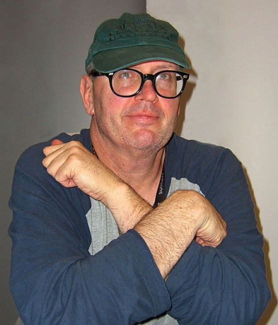
×
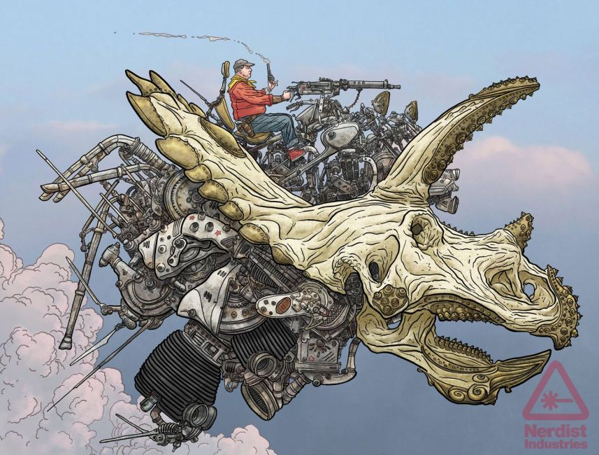
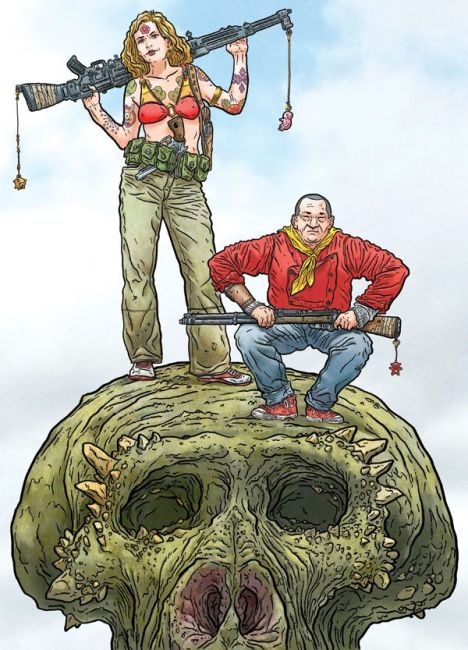
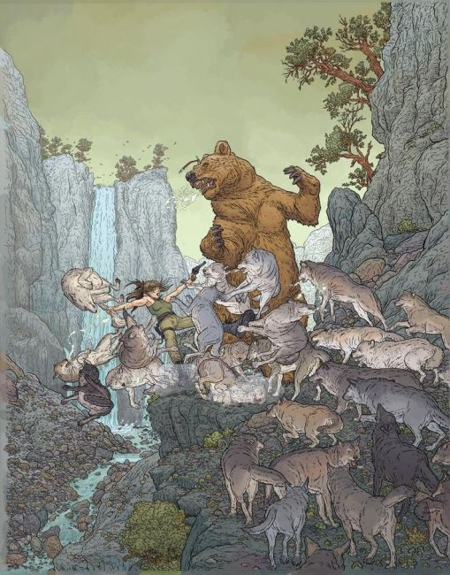
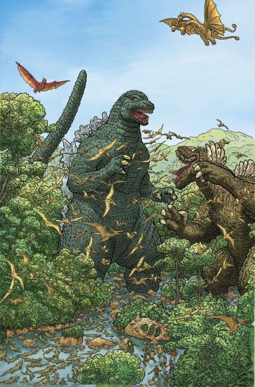
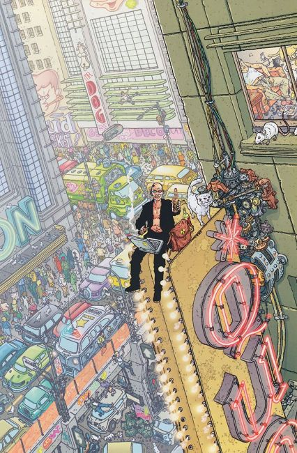
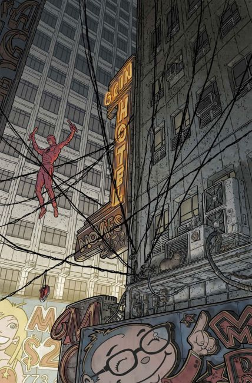
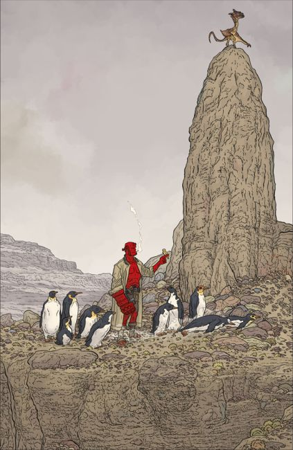
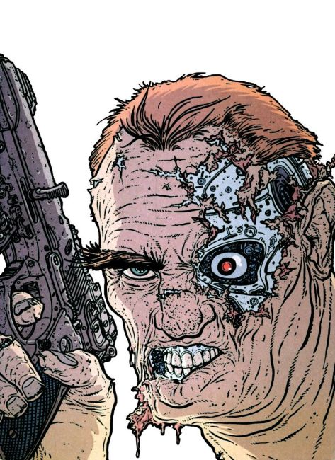
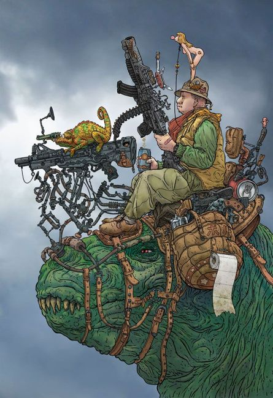
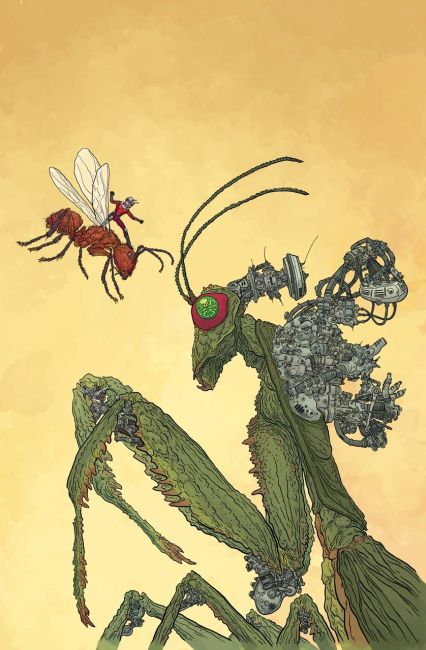
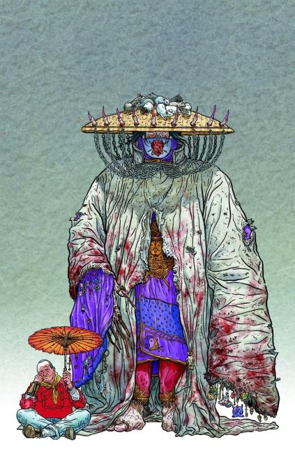
❮
❯
Geofrey "Geof" Darrow (born October 21, 1955) is an American comic book artist, best known for his work on:
Hard Boiled
The Big Guy and Rusty the Boy Robot
Shaolin Cowboy
Transmetropolian (covers)
Darrow was a student at Hanna-Barbera cartoon studios after studying at the American Academy of Arts in Chicago. In the early 1980s he worked in character design for the Super Friends, Richie Rich, and Pac-Man television series.
In 1982, he met French comic book writer and artist "Mœbius" who was working on the film Tron. Two years later, the two collaborated on an art portfolio of prints named La Cité Feu which saw a to 100 copies limited American release by Starwatcher Graphics – Moebius' own Californian publishing house – in 1985, but was later reissued on a somewhat larger scale by Dark Horse as City of Fire in 1993.
Television
Richie Rich (1982) character designer
Super Friends (1981–1983) character designer
Pac-Man (1983) character designer
The Biskitts (1983) character designer
Super Friends: The Legendary Super Power Show (1984) character designer
Pink Panther and Sons (1984) character designer
The Super Powers Team: Galactic Guardians (1985) character designer
Garbage Pail Kids (1987) models
Big Guy and Rusty the Boy Robot (1999) monster designs
Cinema
Josette au Beret (1992) Man on Scooter
Barb Wire (1996) visual consultant
The Matrix (1999) conceptual designer
The Matrix Reloaded (2003) conceptual designer
The Matrix Revolutions (2003) conceptual designer
Speed Racer (2008) conceptual designer
The Spirit (2008) The Spirit butcher diagram